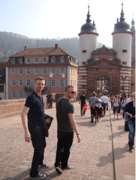
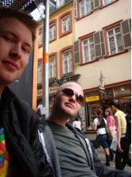
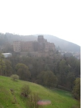
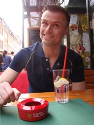
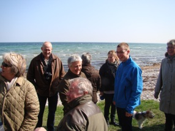
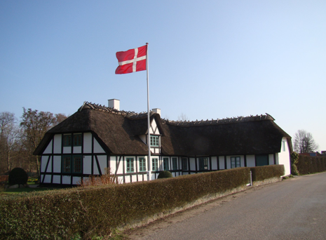

Happy B-day 2 me ;)

Party and chillin’ easter
So there is quite a lot to write about since it has been a while since last time I wrote here so it will not bee as detailed as you might have hoped - but feel free to ask if you want to know more. The reason to this is simply that I have been quite busy... but now that I'm back to the usual daily circle of working, eating, sleeping, (drinking,) working and so on, I have some time to write again.
After Mette left Germany and I came home from the WMW concert I had a rather intensive galaxy course ahead of me. It lasted for a week so I didn't really do anything else than trying to get as much information out of it as possible.

And I didn't mind having a compact week since a new that the weekend after my brother and Rolf would visit me, so I expected that there would be plenty of possibilities to de-stress... and I was right!Martin and Rolf came to Heidelberg thursday evening around 18 o'clock. I was at the IMPRS seminar when they arrived, so unfortunately I couldn't pick the up at the Hauptbahnhof, but Martin texted me and informed me that they had just ordered a couple of long island ice teas so I should hurry - and so I did. I found them at Merlin very happy in the german spring sun enjoying yet another drink. We went to

Neckar Wiese where we joined the rest of the IMPRS guys for a couple of beers. Afterwards I showed Martin and Rolf Sonderbar which is kind of 'our' bar in Untere Strasse. After plenty of beer, whiskey and absinthe we went back to my place for a good nights sleep. When we got up friday we went to city centre where we spend most of the day. We walked up and down Hauptstrasse, had a couple of (awful) burgers and a couple of G&Ts. I also showed them the

castle and the old bridge - just so they could say that they had been in Heidelberg... Friday night we went to a rather posh club in Neuenheim where we had a really great night. I think I will probably go there again some day, it was really cool even though the music was kind of 'weak'. Or to be more precise the music was good but the sound was not really optimal for the choice of music (electronic). Well all in all it was an excellent night.Saturday was the day of great cocktails. When we got up we were all three in the mood for late lunch and bloody marys, so we found a cocktail bar near the old bridge that served food as well. We didn't expect much and were therefore very surprised when we got really good cocktails - I will definitely go there again!

The drinks were so good so what was meant only to be a round of bloody marys grew to various excellent cocktails and a chat with the waitress. I think we ended up being there something like 6 hours - a great way to spend a saturday in 25 degrees warm spring-Heidelberg! At around midnight we joined the other guys at the Cave (another club in Heidelberg) where we spend the rest of the night/morning.Marting and Rolf left sunday afternoon/evening heading back to DK. Excellent weekend but next time I think we should tone down the alcohol intake and maybe not spend that much money - but it was a lot fun!
After the weekend-of-doom I had a couple of days of work before I left Germany for easter in Denmark. I arrived in CPH late wednesday night. Thursday Mette and I were invited for lunch at my parents. My grandma' was also there enjoying the traditional danish easter-lunch with us. You really appreciate the danish 'cold-table' when you are living down here (even though the food is not that different). Friday we went to my parents 'in law' for a double birthday. Mettes sister and her father have birthday on the same day, so the whole family was invited for brunch - mmm me like ;) After eating we went for a nice walk to the beach and through the woods just to get some fresh air. Afterwards I drove back to my parents and had easter lam for dinner.
The rest of the weekend Mette and I spend enjoying the spring in Copenhagen and packing the last things I have in Copenhagen, which my parents will bring to Heidelberg in June.
I should probably apologize to all of my friends in Copenhagen for not taken the time to team up for a couple of beers with you all. I meant to but chickened out and decided to spend the time with Mette instead.

I hope you understand (and can forgive me) and I promise I'll make up for it next time I'm in copenhagen (which will probably be in July, since when I'm in DK in may I will be at Funen all the time - sorry).Well now that that's fixed I can sleep with good conscience again...
I came back to HD this tuesday and have been working hard all week so I can relax and enjoy my birthday tomorrow - even though it is actually today - but today I have just been working, 'cause tomorrow Gisella, Claudia and I are throwing a hell of a triple birthday party... I think it's gonna be wild! So even though it has been kind of weird doing nothing on your (I chose it myself) I will for sure make up for it tomorrow.
Happy spring everybody!!
Oh by the way - I have created a new site with some spaß under the private section - feel free to give me some ideas of what to put in here... just because I can :)
Friday, 17 April 2009
